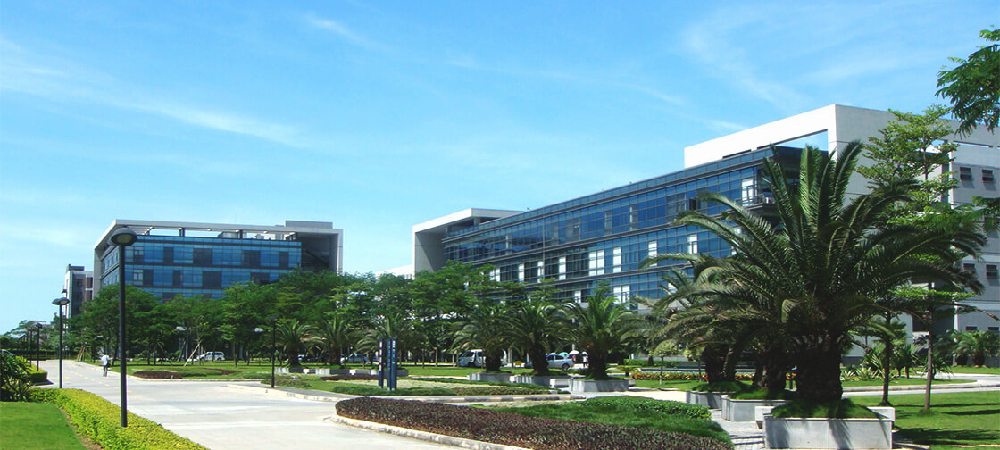
关于 OPPO
OPPO全称广东欧珀移动通信有限公司，成立于2004年。 是一家全球性的智能终端制造商和移动互联网服务提供商，致力 于为客户提供先进和精致的智能手机、高端影音设备和移动互联网产 品与服务，业务覆盖中国、美国、俄罗斯、欧洲、东南亚等广大市场。 作为一个年轻的探索者，我们从一开始就不甘心做一个平凡的品牌。 怀着探索未知的强烈好奇心，OPPO先后进入MP3、MP4、蓝光高清影 音、手机和移动互联网等领域。如今OPPO产品和服务已覆盖中国、美 国、俄罗斯、欧洲、东南亚等广大市场，现正致力于打造专业化的智能 手机与移动互联网公司。OPPO 愿景
成为更健康、更长久的企业。OPPO使命
让不凡的心尽享至美科技。核心价值观
本分、用户导向、追求极致、结果导向。OPPO 历史
2016.3
2016年3月17日，北京演艺中心，OPPO春季新品发布会正式召开， 在会上OPPO正式对外公布了全新升级的品牌理念“美因苛求”，与到场媒体分 享了OPPO制造产品的态度，并且正式发布了在“美因苛求”理念下研发制造 出来、预热已久的“全新闪充自拍专家”OPPO R9以及OPPO R9 Plus。
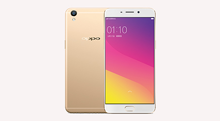
2015.5
OPPO在北京奥雅会展中心举办了“十年诚品 OPPO新品沟通会”， 在沟通会上回忆了OPPO品牌十年来的发展历史和经典产品，同时发 布了OPPO R7、OPPO R7 Plus和OPPO自拍杆等多款新品。
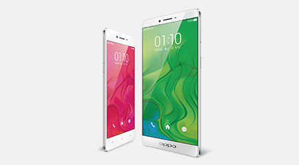
2014.6
OPPO举行“引领4G 至美一拍”4G产品发布会，宣 布全线转型4G，并发布4G新品OPPO N1mini和OPPO R3。
2013.9
OPPO 发布N系列旗舰产品——搭载旋转摄像头的智能手机N1， 同时邀请陈坤、江一燕拍摄广告片《他/她不知道的事》，N 1还入选英国《stuff》杂志2013年度十佳智能手机。
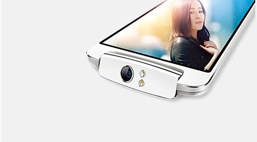
2012.12
OPPO发布Find系列旗舰产品Find 5，它拥有1080P屏幕，并获 得美国著名IT杂志《PC magazine》授予的“PC magazine 年终best buy推 荐”和被誉为“设计的奥斯卡”的IF设计奖。

2011
OPPO全键盘智能手机X903上市，标志着OPPO正式进军智能机领域。

2006
OPPO推出MP4。
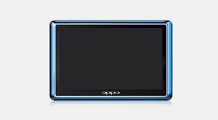
2015.10
OPPO在北京五棵松体运馆Hi-Park，以“秋季新品品鉴会”为主题，举办了一场别开生面的媒体品鉴会。在品鉴会上，不但回顾了“十年诚品”OPPO R7系列的热销情况，更是乘势推出了OPPO R7的升级版——OPPO R7s，以更好的设计、更好的工艺、更好的配置以及更有诚意的价格，带来了新一代“万人迷”！
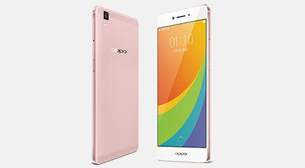
2014.10
OPPO在北京奥雅会展中心举行了“One More Step”新品发布会，推出超越之作——电动旋转摄像头OPPO N3和超薄4.85mm金属机身OPPO R5。
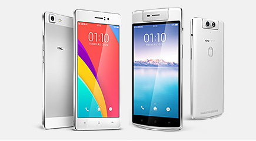
2014.3
OPPO发布4G旗舰新品Find 7。该手机搭载充电更快更安全的VOOC闪充技术、配备5000万超清画质的拍照技术和5.5英寸2K屏。
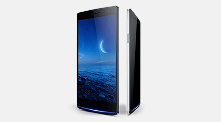
2013.4
OPPO推出基于安卓 （android） 深度定制的系统ColorOS。
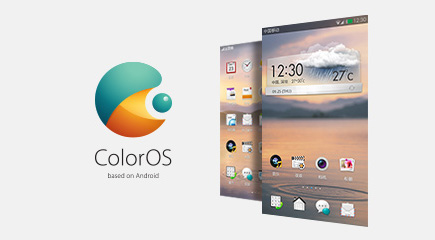
2012.6
OPPO发布超薄智能手机Finder，厚度仅6.65毫米。
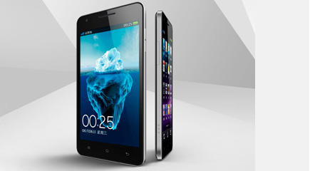
2008
OPPO进入手机领域，建立OPPO Real分系列，功能机“笑脸手机”A103问世。
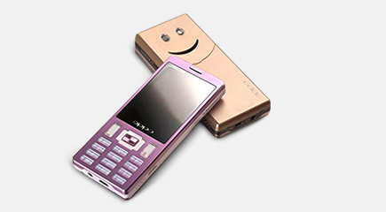
2005
OPPO推出MP3。同年推出X9，被誉为“国产MP3真正意义上的开门红之作，她是第一个毫不逊色于国际大厂产品的里程碑经典之作。”
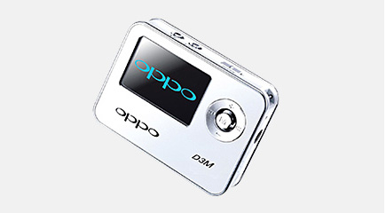